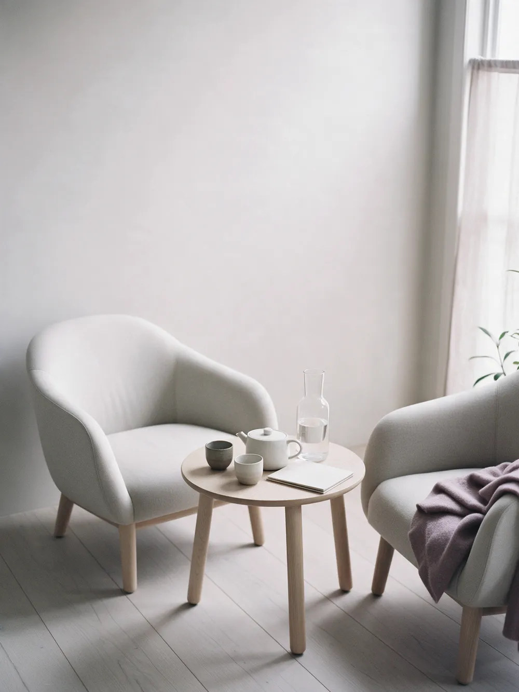
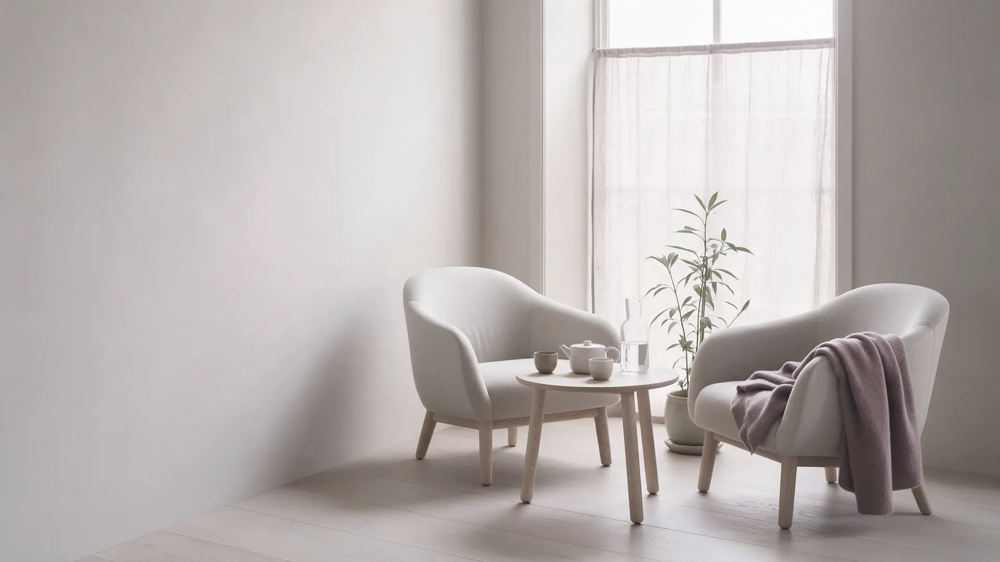

Очно 3 500 ₽
- Где
- Кабинет: ул. Кирова, 10, Ярославль
- Сколько
- 50 минут
- Подойдёт
- Если важно выйти из дома и говорить в отдельной тихой комнате

Анна Соколовапсихолог-консультант
Первая встреча – чтобы спокойно разобраться, что происходит. Очно в кабинете или онлайн, без оценок и спешки.
Это достаточная причина прийти. Не нужно ждать, пока станет «совсем плохо», и не нужно заранее знать, с чего начать.
Работаю со взрослыми: очно в кабинете в Ярославле и онлайн. Не даю советов, «как правильно жить», – помогаю увидеть, что происходит, и найти шаги, которые подходят именно вам.
Мне важно, чтобы после встречи у человека было больше ясности и сил, а не новых правил, которым нужно соответствовать.
Дипломы и сертификаты покажу на первой встрече или пришлю по запросу.
Если узнаёте себя хотя бы в одной строке, этого достаточно, чтобы записаться. Формулировать «правильно» не нужно.
Не могу расслабиться, прокручиваю мысли, плохо сплю
Сил нет даже на то, что раньше радовало
Ссоримся по кругу и не знаю, остаться или уйти
Сравниваю себя с другими, боюсь ошибиться, не умею отказывать
Переезд, развод, новая работа, рождение ребёнка – и почва уходит из-под ног
Не стало близкого человека, и непонятно, как жить дальше
Вроде всё нормально, а внутри плохо. Хочу разобраться
Если нужна помощь врача, скажу об этом прямо и подскажу, к кому обратиться. При мыслях о самоубийстве или угрозе жизни звоните 112.
ЗаписатьсяНеизвестность пугает больше, чем сам разговор. Вот как обычно проходит первая встреча – очно и онлайн одинаково.
Договариваемся о главном: всё, что вы расскажете, остаётся между нами. На любой вопрос можно не отвечать.
Вы рассказываете, что беспокоит, в том порядке, в каком получается. Готовиться или подбирать слова не нужно.
Я уточняю, когда это началось и что вы уже пробовали. Вместе ищем, что помогает держаться уже сейчас.
Обсуждаем, чего вы хотите от работы, как часто встречаться и сколько встреч примерно может понадобиться.
Продолжать или нет, решаете вы. Можно подумать дома и написать позже – без напоминаний и уговоров.
Встреча длится 50 минут в обоих форматах. Цена одна и та же для первой и следующих встреч, если не указано иначе.

Не нашли свой вопрос – задайте его в форме заявки, отвечу до встречи.
Психиатр – врач: ставит диагноз и может назначить лекарства. Психолог работает разговором и лекарств не назначает. Если увижу, что вам нужна помощь врача, скажу об этом прямо.
Да, конфиденциальность – основа работы. Исключение одно: прямая угроза жизни, вашей или чужой. Об этом правиле говорю в начале первой встречи.
Зависит от запроса. С конкретной ситуацией бывает достаточно нескольких встреч, с давними трудностями работа идёт дольше. Примерный план обсуждаем на первой встрече, а решение продолжать всегда за вами.
По содержанию да: те же 50 минут и тот же разговор. Нужны тихое место, где вас не услышат, и стабильная связь. Наушники помогают.
Так бывает, и это нормально. Скажите об этом – обсудим, что не так, или помогу найти другого специалиста.
Специально никак. Если боитесь забыть важное, запишите пару мыслей в телефон. Прийти можно и с ощущением «не знаю, с чего начать».
Оставьте имя и удобный способ связи. Отвечу в течение одного дня и предложу несколько вариантов времени.
Спасибо. Отвечу в течение одного дня в удобный вам мессенджер или по телефону.
В демо заявка никуда не уходит. На готовом сайте она придёт психологу на почту и в Telegram.